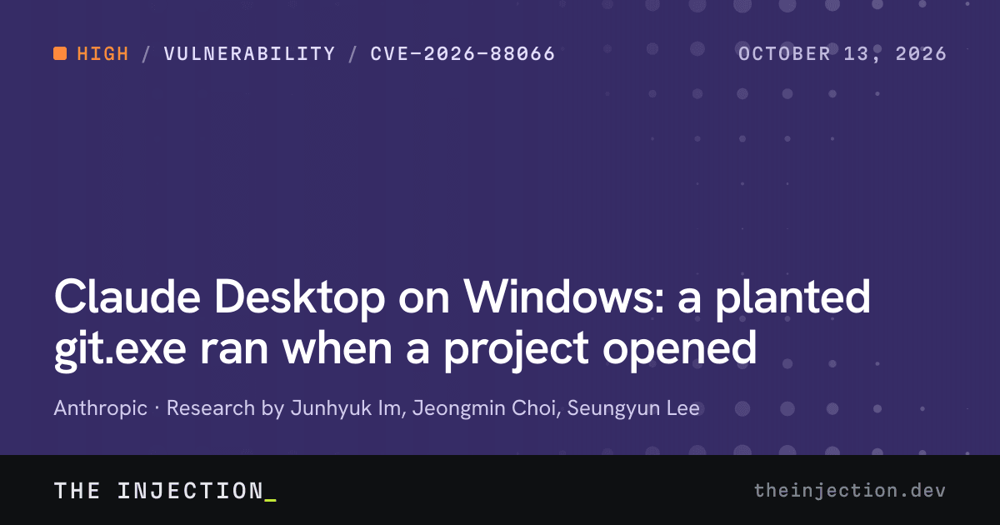
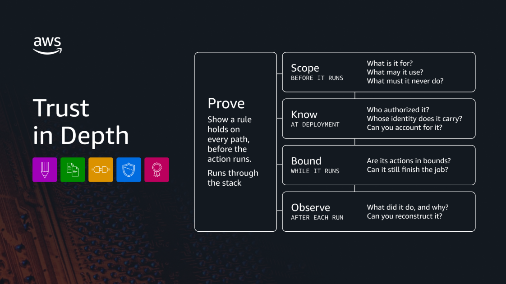
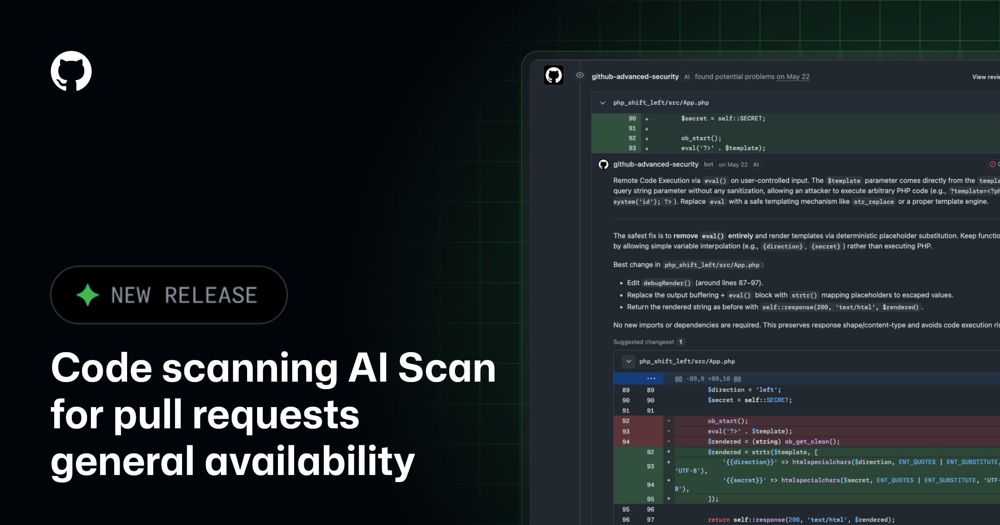

AI Intelligence Daily · 2026-10-16（周五）
今日一句话判断
专栏一｜新闻
本栏：国际 3 长条（Muse / Nemotron / Claude Desktop 安全补收）+ 国内 2 长条（Step-5 / Qoder）+ 1 合并短讯。不单独入栏：灵光 2.0、Gemini 自定义 MCP、DeepSeek 千亿融资（仍无官方）、STEPX 首销实测（10:13 CST 在本统计窗截止后约 2h）、swarmcha 腾讯 fleet（非官方一手）。
- Meta 释出 Muse Spark Open：美侧自称「迄今最强开放权重」多模态 MoE（816B/42B），原生面向 coding & agentic；双 M5 Ultra 桌面可跑
发生了什么（事实）
- Meta AI Research 发布 Muse Spark Open（Introducing Muse Spark Open…，页标 October 15, 2026）：原生多模态开放权重；约 816B 总参 / 42B 激活；1M 上下文；面向长程任务、复杂软件工程与多步推理。
- 权重上架 Hugging Face（
meta-models/Muse-Spark-Open-816B-A42BBF16，APIlastModified2026-10-15T15:46:43Z，核验时 likes≈233；同波 NVFP4…-NVFP4lastModified 17:18:42Z）。仓库为 gated（需申请访问）；许可为 Muse Model License（有限商业条款，官博称大量开发者可免费使用）。 - 托管/推理：API 侧列 Baseten、Fireworks、Groq、Modal、Nebius、OpenRouter、Together；云上 SageMaker / Model Garden / Foundry；引擎含 SGLang、vLLM、TensorRT-LLM、Transformers、Apple MLX、llama.cpp、Unsloth。HF Blog 同步上线部署菜谱（Welcome Muse Spark Open）。
- 产品叙事：宣称首次在其级别把领先 agentic 能力带到桌面——两台 Apple M5 Ultra Mac Studio + MLX；演示含 Muse Code 驱动 Ice Cubes iOS 改动，以及端到端驱动 DaVinci Resolve。安全：额外 open-weight 安全后训练；称满足 Meta Superintelligence Scaling Framework 发布阈值（详细评估报告「即将」）。
我的判断
- 这是相对 Daily 10-13 Muse Wonder / Wonder Full 产品线的开放权重兑现：从「订阅者先行 / API」走到「权重可下载 + 桌面双机可跑」——对开源/本地 agent 生态是格局级信号，评 S。
- 「US open-weight 最强」是 Meta 自述，需第三方复测；gated + 有限商业条款 ≠ Apache 2.0 完全自由，选型时要读许可。
- 双 M5 Ultra 叙事把「个人超级智能 / 桌面 agent」从 RTX/Spark 扩展到 Apple 高端工作站——与 NVIDIA Bolt「24GB 本地」形成硬件分层对照。
往后看：评估报告全文；许可商业边界实操；Wonder/Code 产品是否默认切到 Spark Open；第三方 agent harness（Codex/Claude/Qoder/OpenCode）是否 Day-0 接入。
对智能体互联网：中–强。开放权重个人 Agent 运行时增多 → 身份/委托仍缺标准；与 PAP「个人 Agent」线同气候，但是模型层而非协议层。
对 Work / Agent 引擎：强相关。① 本地/私有部署前沿多模态 agent 基座选型；② MLX / 双机统一内存作为 Desktop Runtime 新拓扑；③ Muse Code 一类「模型厂商自带 harness」对照。
建议动作：① 读许可与 model card，评估是否可进内部 PoC；② 对照 Bolt 24GB / Step-5 600B 做「本地 vs 近端集群 vs 云」成本表；③ 盯 HF gated 申请与评估报告。

来源：主 Meta Research：Muse Spark Open · HF Blog · HF：Muse-Spark-Open-816B-A42B · 社区：HN「Muse Spark Open」（front_page 核验时约 581 分 / 326 评，created 2026-10-15T17:47:39Z）
- NVIDIA Nemotron 3.5：Super VL（120B/12B）+ Bolt 74B-A9B 24GB 开放权重落地；E4B 预定 10-23；对齐 RTX Spark 零售日
发生了什么（事实）
- NVIDIA Blog（
article:published_time2026-10-15T15:00:24+00:00）：Open From Data Center to Desktop… — Nemotron 3.5 Super VL（开放约 120B，12B active，多模态 always-on agent）与 Bolt 74B-A9B 24GB（原生约 2-bit 量化进 24GB，本地 agent）现已可用；Bolt E4B 4GB 预定 Oct 23。 - HF API（本机核验）：
nvidia/NVIDIA-Nemotron-3.5-Bolt-74B-A9B-24GBlastModified 18:09:19Z；…-24GB-GGUF18:10:28Z；…-BF1618:06:22Z；…Super-VL-120B-A12B-BF1621:37:18Z（相对快讯 15:xx 初落盘后续有更新）。许可卡面标 openmdw-1.1。 - 官博称 Bolt 可在 RTX/DGX Spark 上把日常 agent 任务（检索/写代码/调试）留给本地 harness，而不上云；Super VL 强调可后训练、自建基础设施部署；支持 llama.cpp / Ollama / LM Studio 等（Bolt）与 HF/OpenRouter/NIM 等（Super VL）。
我的判断
- 与 Muse Spark Open 同日，但定位不同：Bolt 是「消费级/工作站显存内的本地 agent 模型」，Spark Open 是「前沿多模态开放权重 + 高端双机」——一起把「桌面 agent 算力分层」写清楚。
- 评 A（非 Desktop 客户端发船）；快讯门槛未打断正确，日报必须入栏。
- 保留：官方吞吐/榜单词需第三方复测；2-bit 智能损失未在本稿量化。
往后看：E4B（10-23）；RTX Spark 零售首日体验；与 OpenShell / PAIR 安全栈合读；Ollama/llama.cpp Day-0 稳定性。
对智能体互联网：弱–中。本地模型多了，跨设备发现/信任仍靠应用层。
对 Work / Agent 引擎：强相关。本地 harness 默认模型候选；24GB 显存预算下的量化与工具调用策略。
建议动作：在 RTX/Spark 或等价 24GB 环境跑一轮「本地 agent 日常任务」基准，对照云端 Argon/Claude。

来源：主 NVIDIA Blog · HF Bolt 24GB · HF Super VL BF16
- 阶跃 Step-5-Preview 开放权重（600B/27B，1M 上下文）+《Inside Step 5 Preview》架构训练长文；配套 Step Code 0.1.4 continuum
发生了什么（事实）
- Hugging Face：
stepfun-ai/Step-5-PreviewlastModified 2026-10-15T01:28:10Z；同波Step-5-Preview-BF1601:31:42Z、Step-5-Preview-NVFP401:26:46Z；ModelScope 有镜像。卡面：稀疏 MoE 600B / 27B active，最长 1M 上下文，文本+图像输入；许可other（见仓库 LICENSE.txt）。 - 官方长文：Inside Step 5 Preview: Architecture and Training for Agentic Work（Oct 15）——窄深 92 层、Gated SWA 与 Sparse GQA（块大小 8 / top-k 等）、训练稳定性（FP32 hidden / RMSNorm scale、细粒度梯度裁剪）、agent-native 数据合成、长程 RL（训练-推理 bitwise 对齐、上下文压缩纳入策略、turn 级 credit）等。
- 定位：旗舰 agentic work（软件工程、长程工具调用、专业知识工作，强调金融）。部署菜谱含 vLLM / SGLang / Transformers（FP8/BF16 硬件表见 HF README）。
- CDN Step Code 0.1.4 仍为 2026-10-12T09:11Z 生成（非本窗新 Desktop）；官方 X 对开源线程放大（快讯已记 continuum）。国内媒体（IT之家、第一财经等）同日转述，以 HF + 架构博文为一手。
我的判断
- 国内开源权重里少有把「长程 agent + 训练系统」写得这么工程化的公开材料；对 Harness/RL 基础设施团队是可拆文，不只是又一个大 MoE。
- 与 STEPX Neo（今日 10:13 首销，见短讯）同属阶跃 agent 叙事：模型开源 + 终端闭源硬件，路线并行。
- 评 A（开放权重/工程披露）；非新 Desktop 客户端。
往后看：许可商用边界；Launch Night 10-22；WorkBuddy 限免窗口；第三方 SWE/agent 复测。
对智能体互联网：中相关。长程 agent 需要的上下文压缩/委托回滚，可对照协议层会话状态设计。
对 Work / Agent 引擎：强相关。Sparse GQA / 长程 RL / agent-native 数据管线，是训练侧与 Runtime 侧共同的参考实现描述。
建议动作：① 精读架构博文「Zero Training-Inference Mismatch / Context management」两节，抽进内部技术札记；② 评估 FP8 单节点部署成本；③ 与 Muse/Bolt 并列入「开放权重 agent 基座」观察池。

来源：主 HF：Step-5-Preview · 架构博文 · 产品页 stepfun.com/step-5-preview
- 补收｜Claude Desktop 双安全议题：CVE-2026-88066（Windows
git.exe 搜索路径 RCE，已修 1.8089.0）+ SneakPeek 预览窗数据外传（披露 10-14 / 称 8-17 已修）
git.exe 搜索路径 RCE，已修 1.8089.0）+ SneakPeek 预览窗数据外传（披露 10-14 / 称 8-17 已修）发生了什么（事实）
- CVE-2026-88066 / GHSA-4p2j-qj3c-6x84（Published Oct 13, 2026）：Claude Desktop Windows < 1.8089.0 经
uv_spawn启动git.exe未给绝对路径 → 进程先搜 CWD → 仓库内恶意git.exe在打开项目时即可执行（CWE-427）；CVSS 4.0 7.5 High；已修 1.8089.0（自动更新用户据称已覆盖）。解读页：theinjection.dev。 - SneakPeek（Noma Labs，披露文，Oct 14, 2026）：Claude Code Desktop 预览窗对 >256KB 经
file://加载的 HTML 可执行 JS，进而读本地敏感文件外传；文称 Anthropic 2026-08-17 在 1.30096.1+ 热修；披露时 GitHub Advisory/CVE「pending」。与 88066 分列根因（预览窗 vs git 搜索路径）。
我的判断
- 两条合看：Desktop Agent 宿主的「打开项目 / 预览产物」都是高危面——不必等 prompt injection，文件系统与预览引擎就够用。
- 与上期 IDE 双 CVE（
.mcp尾点、VS Code 路径穿越）同气候：canonicalize + 绝对路径 + 预览沙箱成为标配作业。 - 保留：88066 需用户确认版本；SneakPeek 的 CVE 号/正式 advisory 仍 pending，以 Noma 文 + 厂商补丁版本为准。
往后看：Cursor/其他 Desktop 是否同类 git spawn；SneakPeek 正式 CVE；野外利用。
对智能体互联网：中相关。本地 Agent 若代表用户打开不可信仓库，等于隐式扩大委托面。
对 Work / Agent 引擎：强相关。① 子进程必须绝对路径；② 预览/渲染面默认隔离；③ 打开工作区 = 安全边界事件，需审计。
建议动作：① 全员 Desktop ≥ 1.8089.0（且确认 ≥1.30096.1 预览修复）；② 红队用例：「恶意仓库 git.exe」「超大 HTML 预览」；③ 对照 CVE-2026-63093（Cursor Windows 同类叙事，若适用）。

- Qoder：Agent Teams 下放到个人版 + Phone use（Apple silicon Mac 控 iPhone 看屏）+ Locked use；Desktop 0.4.8 仅为热修
发生了什么（事实）
- Qoder Release Notes：October 14, 2026 · Qoder 0.4.7 — Agent Teams「Now available in the personal edition」（Team Leader 分派/协调/汇总）；Phone use（Mac with Apple silicon）：启用插件并完成设备配对后，Agent 可操作已连接 iPhone 并在任务侧栏看屏；Locked use (Beta)：macOS 14.4+ 锁屏后仍可 Computer Use（需管理员授权）。另有 interactive visualizations 等。
- October 15 · 0.4.8：仅「Fixed an issue where past instructions could occasionally be queued again」——热修，不作发船标题。
- 文档另见 custom-agent-teams 等。勿与 9 月已有的 Mobile Remote Control（手机遥控电脑）混淆。
我的判断
- 个人版多 Agent 编队 + 手机外设操控，是国内 Coding Desktop 里少见的「人机-多 agent-手机」三角能力；与 Kimi Remote Control、Manus Phone 线对照价值高。
- 不计入
desktop_work_agent_shipping：无新安装包大版本，是既有 Desktop 的能力补丁。 - Locked use 放大「人不在场仍可操作本机」的信任问题——与 Trust in Depth / 远程批准同题。
往后看：权限/配对说明是否写清；企业策略能否关 Phone/Locked；与 Kimi 1.1.0 Remote Control UX 对照。
对智能体互联网：中相关。多 Agent 编队与设备侧执行，涉及委托范围与设备身份。
对 Work / Agent 引擎：强相关。Team Leader 调度、手机作为工具面、锁屏 Computer Use 的策略开关。
建议动作：拆 Teams 配置模型进对标表；PoC「危险工具是否强制本机解锁确认」。
配图：RN 页无可靠事件专图，按规则不配图。
- 短讯合并｜Trust 论述 / GitHub 安全 Agent GA / 开源 Agent OS / CLI continuum / 今日到期
- AWS「Trust in Depth」（国际，B）：Shawn Bice，ML Blog 2026-10-15T15:05:35Z（
-08:00页标）。相对 Defense in Depth，提出 Scope / Know / Bound / Observe 四问；指向 AgentCore Policy、身份、Gateway 外置强制、可观测。思想稿，非新沙箱 CTA。博文 - GitHub AI Scan for PRs GA + Agentic autofix GA（国际，B）：Changelog Oct.15。AI Scan 补 CodeQL 未覆盖语言的 PR 差分 advisory（不阻断 merge）；Agentic autofix 让 Copilot 探索修复、重跑 CodeQL 验证后开 draft PR。AI Scan · Agentic autofix
- OpenBMB PilotDeck 2.0（国内开源，B/A− 开源栏详）：README 标 [2026.10.15]；WorkSpace 核心的开源 Agent OS，办公 Skills、Always-on、MCP。GitHub
- CLI npm continuum（非 Desktop shipping）：
@openai/codex0.162.1→0.163.0（21:37:11Z）；@anthropic-ai/claude-code2.1.301（14:34:23Z）；@tencent-ai/codebuddy-code2.168.0（16:00:42Z）；@minimax-ai/code0.6.12（15:58:39Z）。MiniMax Desktop yml 仍 3.1.1；Kimi Desktop 仍 1.1.0；Gemini RN 仍 2026.10.13。 - STEPX Neo 首销：今日 10:16 10:13 CST 开售（本统计窗截止 08:00，实测不在窗内）——脚注跟踪，不编造销量。
- 脚注：xAI Grok Voice 3.0（Oct 14，非 Desktop）；Sierra Summit London 尚无 day 长稿；RTX Spark 零售日与 Bolt 同日叙事。


专栏二｜话题热议
- Muse Spark Open 开源权重日（国际，强热）：HN front_page 核验时约 581 分 / 326 评（created 2026-10-15T17:47:39Z）。讨论焦点：美侧前沿开放权重是否改写本地/私有部署格局、gated+商业条款边界、双 M5 Ultra 可行性与成本。与 Meta Muse 产品线（Daily 10-13）连续。
- Nemotron Bolt「塞进 24GB」（国际）：官方 X 高曝光放大（快讯/CN 扫描核验 @NVIDIAAI 主帖量级约数十万 impressions）；HN 有多条低分转载，热度主要在 X/HF 而非 HN 爆帖。风向：本地 agent 是否「够用」。
- Step-5 开源（双边）：官方 X 主帖高互动（CN 扫描核验时约 6 万+ impressions 量级）；国内财经/IT 媒体同日稿；HN 窗内多为 1–2 分索引帖。风向：国内 600B agent 旗舰开源 + 架构博文可读性。
- Claude Desktop 安全余波（国际，专业向）：88066 + SneakPeek 在安全圈传播，热度中等、非大众病毒帖；与上期 IDE CVE 叙事叠加。
- OpenCode 2.0 continuum：仓库持续 push（pushed_at 近 23:46Z）；与 Codex daemon 争议同构对照仍在。
互动数字仅引自 HN Algolia / 扫描日志已核 X public_metrics，不编造。Reddit LocalLLaMA 公开 JSON 被拦；知乎热榜未取到可核高赞串。
专栏三｜开源雷达
| 项目 | 核验点（约 10-16 08:10–08:20 CST） | 看点 / 建议 |
|---|---|---|
| meta-models/Muse-Spark-Open-816B-A42B | lastModified 15:46:43Z；likes≈233；gated；NVFP4 17:18Z likes≈94 | 今日 S 级主条；读许可再 PoC |
| nvidia/…Bolt-74B…24GB (+GGUF/BF16) | 主仓 18:09Z；GGUF 18:10Z；BF16 18:06Z | 本地 24GB agent；跟 E4B 10-23 |
| nvidia/…Super-VL…BF16 | 21:37:18Z；likes≈40 | 多模态 always-on 开源层 |
| stepfun-ai/Step-5-Preview (+BF16/NVFP4) | 01:28Z / 01:31Z / 01:26Z；likes≈70/50/12 | 国内旗舰开源；拆架构博文 |
| microsoft/mxc | ★2,844（相对 Daily 10-15 ★2804，+40）；release 仍 v1.0.0；pushed 近 00:13Z | continuum |
| openai/math | ★14,941（+127）；无新实质 push（仍 10-12） | 星数 continuum |
| anomalyco/opencode | ★213,921（+389）；pushed 23:46Z | OpenCode 2.0 continuum |
| deepseek-ai/deepseek-harness | ★250,432（+762）；alpha.4 仍 13:08Z | alpha continuum |
| mksglu/context-mode | ★29,787（+685） | Context 路由 continuum |
| OpenBMB/PilotDeck | 2.0 README [2026.10.15] | 国产开源 Agent OS；拆 WorkSpace/Memory |
Desktop / CLI shipping 表
| 组件 | Daily 10-15 / 快讯 23:26 基线 | 现值（10-16 ≈08:15） | 结论 |
|---|---|---|---|
| 一线 Desktop 新客户端 | Kimi 1.1.0 | 无新 | shipping=0 |
| @openai/codex | 0.162.1 / alpha.11 | 0.163.0 latest @21:37Z | CLI shipping continuum |
| @anthropic-ai/claude-code | 2.1.300（next 曾 2.1.301） | 2.1.301 latest | CLI continuum |
| @github/copilot | 1.0.98 / 1.0.99-0 | 1.0.98 / 1.0.99-1 | prerelease continuum |
| @tencent-ai/codebuddy-code | 2.167.0 | 2.168.0 | CLI continuum |
| @minimax-ai/code / Desktop | 0.6.11 / 3.1.1 | 0.6.12 / 3.1.1 | CLI only |
| @deepseek-ai/dsh | 0.2.0-rc.2 / alpha.4 | 同左 | 持平 |
| Kimi Desktop / CLI | 1.1.0 / 2.2.0 | 同左 | 持平 |
| Qoder | 0.4.7 能力 / 0.4.8 热修 | 能力补收见新闻 5 | 非新客户端 |
| ZCode / 小艺 / Manus / Step Code / Gemini RN | 3.15.3 / 0.7.3 / 2.0.4 / 0.1.4 / 2026.10.13 | 同左 | 持平 |
重点事件新进展
- Meta Muse（watchlist 28）：强 UPDATE——Wonder 产品线后出现 Muse Spark Open 开放权重（新闻 1）；盯评估报告与许可。
- Nemotron Bolt（60）：兑现——权重与官博落地（新闻 2）；E4B→10-23；RTX Spark 零售日叙事。
- Step-5（57）：兑现——HF 权重 + 架构博文（新闻 3）；Launch Night 10-22。
- CVE-88066 / SneakPeek（58/61）：补收入栏（新闻 4）。
- Qoder Teams/Phone（59）：产品能力入栏（新闻 5）；0.4.8 热修不升格。
- Kimi Desktop 1.1.0（56）：持平，无新 Remote Control 细则。
- PAP / Sierra Summit（00）：Draft 0.1 未升版；London 尚无 day 长稿。
- STEPX（42）：首销时刻在窗外（10:13）；窗内无新官方长稿。
- Argon / IDE CVE / AWS Strands / TRAE / 灵光：无升格级一手；TraeWork EOL 仍 10-23。
今天正在形成的趋势
- 开放权重 agent 基座「分层上市」：前沿多模态（Muse Spark Open）× 数据中心多模态（Super VL）× 24GB 本地（Bolt）× 国内旗舰 MoE（Step-5）同日可见——选型从「有没有」变成「哪一层、什么许可、什么硬件」。
- 桌面仍是主战场，但是「模型」先于「新客户端」：本期 shipping=0，变化来自权重与既有 Desktop 能力（Qoder Teams/Phone），不是又一个安装包。
- Desktop 宿主安全债务集中暴露：git 搜索路径、预览窗、上期
.mcp/路径穿越——「打开项目」本身是攻击面。 - Trust 话语产品化：AWS Trust in Depth 四问 + GitHub Agentic autofix「自验证再开 PR」，说明治理从口号走向可检查步骤。
- 多设备委托成为标配讨论：Phone use / Remote Control / Locked use ——人不在键盘前时，谁批准危险工具。
对智能体互联网最值得吸收的东西
- 开放权重 ≠ 开放委托：Muse gated + 有限商业条款提醒——互联层仍要独立的身份/授权，不能假设「能下载模型就能代表用户行动」。
- Trust in Depth 四问可作协议评审清单：Scope / Know / Bound / Observe 可直接映射到 Agent 注册、凭证、策略执行点、审计日志字段。
- （可选）设备侧执行的委托边界：Phone use / 本地 git spawn 说明「执行点在哪台设备」必须写进委托令牌。
对 Work / Agent 引擎最值得吸收的东西
- 本地模型分层表：Muse（双高端 Mac）/ Bolt（24GB）/ Step-5（近端 GPU 集群）——Runtime 调度应按显存与许可分流。
- 子进程绝对路径 + 预览沙箱：对标 88066 / SneakPeek，列为 Desktop Harness 发布门禁。
- 个人版多 Agent 编队 UX：Qoder Teams Leader 模型可对标内部「子 agent 编排」产品化。
- 长程训练系统启示（Step-5 博文）：训练-推理对齐、上下文压缩进策略、turn 级 credit——对自建 RL/harness 评估有直接参考。
值得继续跟踪
- 事件：Muse Spark Open，重点观察：评估报告、许可实操、Wonder/Code 默认模型、第三方 harness Day-0。
- 事件：Nemotron Bolt / Super VL / E4B（10-23）+ RTX Spark 零售，重点观察：本地 agent 实测、量化质量。
- 事件：Step-5 + STEPX 首销 + Launch Night 10-22，重点观察：许可、部署菜谱、终端权限/支付确认。
- 事件：Claude Desktop 88066 / SneakPeek，重点观察：正式 CVE、其他 Desktop 同类。
- 事件：Qoder Teams / Phone / Locked，重点观察：权限模型与企业开关。
- 延续：PAP/Sierra · Kimi Remote Control · Argon 11-30 定价 · IDE CVE 分支 · AWS Strands · OpenCode/Codex daemon · TraeWork EOL 10-23 · 灵光 2.0 官方 · PilotDeck 采用度 · MiMo 旧 ID 10-21 · Find X10 / Manus×OPPO 10-21 · MCPCon 10-23 · Mistral L4 10-31。
未来信号
- 「双机桌面超级智能」可能成为短暂窗口期产品形态：在端侧芯片统一内存上去之前，高端双机/工作站集群会吃下开放权重前沿模型——Agent Runtime 要准备「近端多机」拓扑，而不仅是单 GPU。
- 预览/渲染面或成下一轮 Desktop 强制沙箱点：SneakPeek 说明产物预览与工具执行一样危险。
价格 / 订阅雷达
- 今日未见可核实的重要新促销、调价或额度变化（主力为开放权重与安全/产品能力）。
- 延续：Argon introductory 至 11-30 后 $4/$20；MiMo 旧 ID 10-21 10:00 CST 停用；OpenRouter ElevenLabs 5 折至 10-19；STEPX Neo 全栈价媒体称 3999 元（以商品页为准）；Qoder 促销帖属营销 continuum。
信源与方法
- 时间窗：2026-10-15 08:00 → 2026-10-16 08:00 Asia/Shanghai；吸收 10-15 快讯 SILENT 轮次与 pin 57–62。
- 扫描日志：
flashes/.scan-2026-10-16-daily-cn.md（已落盘）· intl/oss 巡检并行（npm 时间戳、HF API、官博、GHSA、HN Algolia 本机直核）。 - 官方 vendor-check 摘要：P0——Meta Muse Spark Open new(S)；NVIDIA Bolt/Super VL new(A)；StepFun Step-5 权重 new(A)；Anthropic Desktop CVE continuum 补收；Qoder 能力补收；OpenAI/Google/Cursor/Manus/Kimi Desktop 等无新 Desktop 客户端发船；AWS Trust new(B)；GitHub AI Scan/autofix new(B)。npm shipping 多条 CLI bump，desktop_work_agent_shipping=0。
- 连接器/工具：X 公共读、npm registry、HF API、GitHub API、WebFetch/WebSearch、HN Algolia、curl 官博。
- 配图：6 张（Muse、Nemotron、Step-5 基准图、88066 OG、AWS Trust、GitHub AI Scan）；Qoder 无事件专图不配；禁止 AI 生成图。
- 脆弱面：Muse HF gated（卡片可读、权重需申请）；stepx.com SPA；SneakPeek CVE pending；STEPX 首销实测在窗外；Reddit/知乎登录墙。